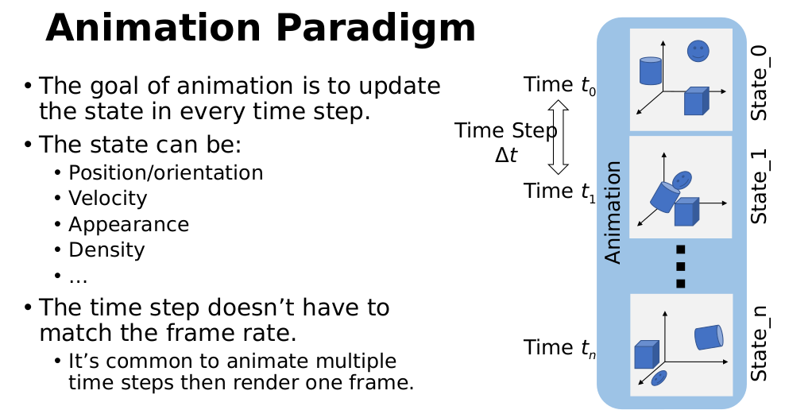
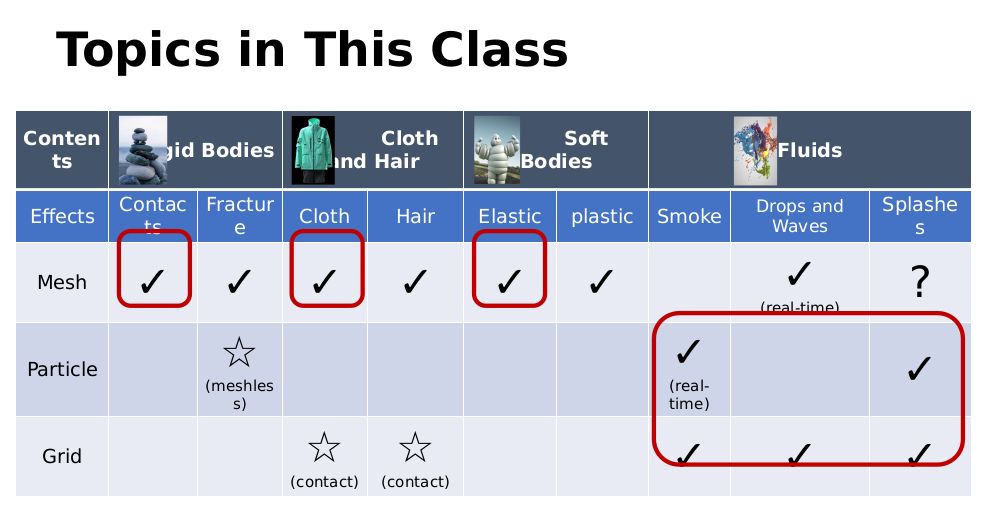

GAMES103 — Physically-Based Animation Note1: Intro and Math Basics
1. Intro
1.1 什么是计算机图形学
从3D digital world到2D digital image是计算机图形学（rendering渲染）， 反过来从2D image恢复出3D world是计算机视觉。两者互为逆问题。
Three areas in Computer Graphics:
- Geometry: modeling the 3D world（把三维世界建出来）
- Animation: animate the 3D world（让它动起来）
- Rendering: visualize the 3D world（把它画到屏幕上）
1.2 Graphics Pipeline
三种应用场景的区别，就在于geometry / animation / rendering三步里哪些是离线做好的、哪些在线实时算：
| 场景 | Geometry | Animation | Rendering |
|---|---|---|---|
| Real-time（游戏） | offline | online | online |
| Animation playback | offline | offline | online |
| Movie（电影） | offline | offline | offline |
游戏最苛刻：动画和渲染都要实时；电影全部离线，所以可以慢慢算到很精细。
Geometry有三种表示：
- Mesh：由vertices（nodes）和elements（triangles, polygons, tetrahedra…）组成，
分structured和unstructured mesh。围绕mesh的方向有：
- Meshing（怎么生成网格，如Delaunay triangulation）
- Simplification / subdivision（简化与细分）
- Mesh optimization（smoothing, flows…）
- Volume mesh（体网格）
- Point Cloud：一堆 \((x, y, z)\) 点，surface scan扫出来的raw data通常就是它。方向有：
- Mesh reconstruction from point cloud（从点云重建网格）
- (Re)-sampling（重采样）
- Neighborhood search（邻域查找）
- Volumetric Grid（体素）：用grid把空间切成cell，每个cell存这个位置的物理量，
常来自volumetric scan（比如CT）。方向有：
- Memory cost（内存开销大，可用octree省）
- Volumetric rendering（体渲染）
1.3 什么是Physics-Based Animation?

如上图，动画的本质就是一件事：每过一个time step \(\Delta t\)，把state更新一次。 从State_0出发，算出\(t_1\)时刻的State_1，再算State_2……一直推到State_n， 把这些state连起来播放就是动画。
- state可以是任何描述场景的量：position/orientation、velocity、appearance、density… 模拟刚体时state是位置和朝向，模拟烟雾时state就是密度场。
- time step不需要等于frame rate：常见做法是每渲染一帧之间跑好几个仿真步 （比如渲染60fps，仿真240步/秒）——step太大会不稳定、丢细节，所以仿真要比渲染更密。
所谓physics-based，就是这个"从State_k算State_k+1"的更新规则由物理定律给出 （牛顿第二定律、弹性力、流体方程…），而不是美术师手K关键帧。
1.4 Topics in This Class

这张表是整门课的地图：列是模拟对象，行是几何表示（正好对应1.2的三种表示）， 格子里打勾表示"这种对象常用这种表示来模拟"：
- Rigid Bodies（刚体）：contacts（碰撞接触）、fracture（破碎）
- Cloth and Hair（布料与头发）
- Soft Bodies（软体）：elastic（弹性）、plastic（塑性）
- Fluids（流体）：smoke（烟）、drops and waves（水滴与波）、splashes（飞溅）
红圈是本课会讲的内容：
- 用mesh做刚体contacts、cloth、elastic软体 —— 对应note 2（刚体）、note 3（布料）、note 4（FEM弹性体）
- 用particle和grid做流体（实时烟雾、水波、飞溅）—— 对应note 5
打星号的（meshless fracture、用grid处理cloth/hair contact）属于进阶话题，课上不展开。
2. Math Background
2.1 Coordinate Systems and Vectors
- 右手坐标系：右手四指从x转向y，大拇指指向z的正方向（OpenGL、research常用）
- 左手坐标系：左手四指从x转向y，大拇指指向z的正方向（Unity、DirectX常用）
选哪个largely due to the convention of the screen space： 把屏幕平面当xy平面时，z轴从屏幕指向外（朝你）是右手系，指向里是左手系。
微信扫一扫，分享本文
Comments